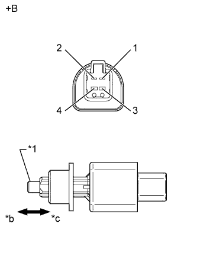
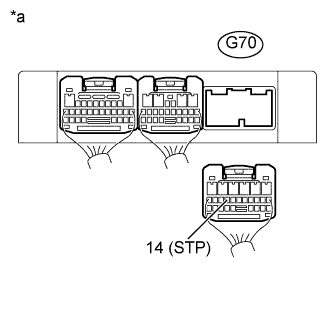

DTC P0724 Высокий уровень сигнала в цепи выключателя тормоза "B" |
| Код DTC | Условие обнаружения DTC | Неисправный участок |
| P0724 | Выключатель стоп-сигналов остается включенным даже после того, как автомобиль выполнил 5 циклов "ОСТАНОВКА" (движение со скоростью менее 3 км/час (2 мили в час)) – "ДВИЖЕНИЕ" (движение со скоростью более 30 км/час (19 миль в час)) (логика диагностирования за 2 поездки). |
|
| DATA LIST |
Прогрейте двигатель.
Выключите зажигание.
Подсоедините портативный диагностический прибор к DLC3.
Включите зажигание (IG).
Включите портативный диагностический прибор.
Войдите в следующие меню: Powertrain / ECT / Data List.
Снимите показания параметров в режиме Data List, отображаемые на дисплее диагностического прибора.
| Информация на дисплее прибора | Измеряемая величина / диапазон измерения | Нормальное состояние | Замечание по диагностике |
| Stop Light Switch | Состояние выключателя стоп-сигналов / ON (ВКЛ) или OFF (ВЫКЛ) |
| - |
| 1.ПРОВЕРЬТЕ ВЫКЛЮЧАТЕЛЬ СТОП-СИГНАЛОВ В СБОРЕ |
|  |
Снимите выключатель стоп-сигналов A5.
Измерьте сопротивление в соответствии со значениями, приведенными в таблице ниже.
| Контакты для подключения диагностического прибора | Положение переключателя | Заданные условия |
| 1 - 2 | Штырь нажат (педаль отпущена) | 10 кОм или более |
| 3 - 4 | Штырь не нажат (педаль нажата) | 10 кОм или более |
| 1 - 2 | Штырь не нажат (педаль нажата) | Менее 1 Ом |
| 3 - 4 | Штырь нажат (педаль отпущена) | Менее 1 Ом |
| *1 | Колпачок |
| *a | Устройство с неподсоединенным жгутом проводов (Выключатель стоп-сигналов) |
| *b | Не нажат |
| *c | Нажат |
|
| ||||
| OK | |
| 2.ПРОВЕРЬТЕ ЖГУТ ПРОВОДОВ И РАЗЪЕМ (TCM – АККУМУЛЯТОРНАЯ БАТАРЕЯ) |
|  |
Отсоедините разъем G70 TCM.
Измерьте напряжение в соответствии со значениями, приведенными в таблице.
| Контакты для подключения диагностического прибора | Условие | Заданные условия |
| G70-14 (STP) - масса | Педаль тормоза нажата | 11-14 В |
| G70-14 (STP) - масса | Педаль тормоза отпущена | Менее 1 В |
| *a | Вид сзади разъема со стороны жгута проводов (к TCM) |
|
| ||||
| OK | ||
| ||